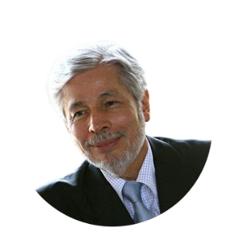
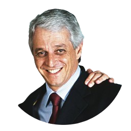
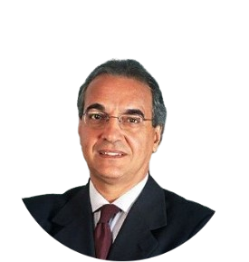

Sobre nós
- - História
A trajetória que nos transformou na maior multinacional brasileira de cosméticos começou em 1969,
quando Luiz Seabra inaugurou uma pequena fábrica em São Paulo. Desde então,
construímos um negócio voltado à construção do Bem Estar Bem – que se manifesta nas relações harmoniosas que um indivíduo estabelece consigo mesmo, com os outros e com a natureza.
Logo no início dos anos 1970, Seabra decidiu apostar na venda direta como forma de apresentar produtos únicos a partir de muitas vozes. Poucos anos depois, Guilherme Leal e Pedro Passos uniram-se a essa jornada e, rapidamente, ampliaram a rede de relações e fortaleceram o negócio.
A loja foi fechada e se começou a montar uma rede de Consultoras e Consultores de Beleza Natura, que hoje soma 1,7 milhão de pessoas.
Clique embaixo para saber mais sobre eles:
Na década de 1990, incorporou com força o tema do desenvolvimento sustentável e do uso da biodiversidade brasileira, materializou o sonho de ser possível contribuir para melhorar a educação com uma linha de produtos não cosméticos cujos lucros são revertidos em projetos coletivos. Nos anos 2000, inauguramos nosso espaço mais simbólico: a sede em Cajamar (SP). Tudo mudava depressa, com a abertura de capital, o fim dos testes em animais e o compromisso com o clima expresso na redução das emissões de carbono.
Nesses 50 anos, cada uma das nossas escolhas ajudou a construir a posição em que estamos: a de quarta maior empresa de cosméticos do mundo.
>Acreditamos no potencial das relações e no poder da cosmética como ampliadora de consciência.
Chegamos a mais de 100 milhões de consumidores por meio de diversos canais. O principal deles é a venda direta, que conta com cerca de 1,7 milhão de consultoras no Brasil, na Argentina, no Chile, na Colômbia, no México e no Peru.
Conheça nosso jeito de fazer negócios: A Natura não faz teste em animais desde 2006 e somente adquire insumos e ingredientes de fornecedores empenhados com essa causa. A prioridade é o uso de ingredientes naturais, renováveis e com origem ética na sociobiodiversidade.
Preocupados com a emissão de gases de efeito estufa (GEE), lançamos nosso compromisso público – o Programa Carbono Neutro – em 2007. O diferencial da iniciativa é considerar poluentes gerados desde a extração da matéria-prima até o produto descartado após o uso pelo consumidor.
O compromisso foi atingido e reduzimos 33% das emissões relativas da companhia e deu lugar a uma nova meta de reduzir outros 33% até 2020.
Luiz Seabra
Pedro Passos
Guilherme leal


